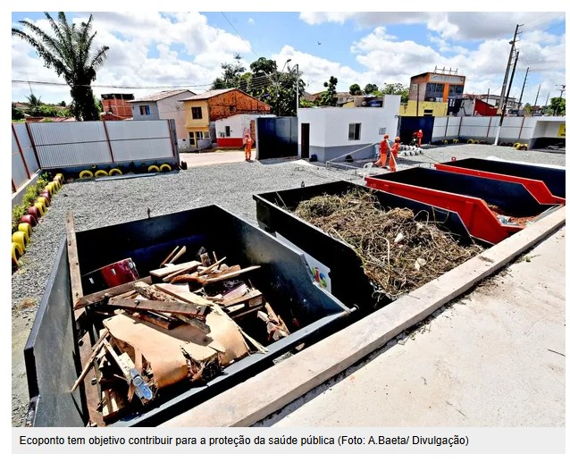
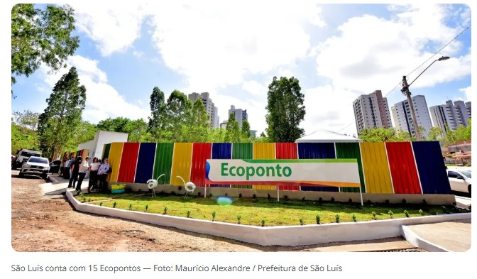
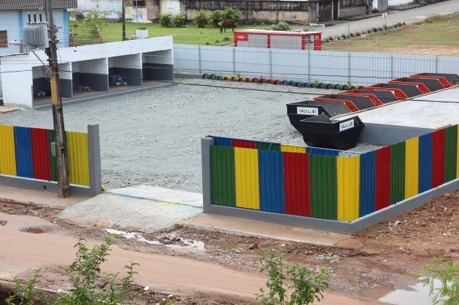

Coleta Seletiva
Coleta seletiva é o processo de separação de resíduos recicláveis do lixo orgânico. A coleta seletiva é uma forma de reciclagem que consiste na separação e recolhimento dos resíduos descartados por empresas e pessoas. O objetivo é encaminhar esses materiais para reciclagem, evitando que sejam descartados em aterros sanitários.
De acordo com a Política Nacional de Resíduos Sólidos, a implantação da coleta seletiva é obrigação dos municípios e metas referentes à coleta seletiva fazem parte do conteúdo mínimo que deve constar nos planos de gestão integrada de resíduos sólidos dos municípios.
Sem educação ambiental e leis alinhadas ao fortalecimento do descarte correto de lixo e captação de materiais que podem reciclados, é comum vemos
descarte de lixo em locais impróprios, como vias públicas, ruas residenciais, calçadas e outros locais que podem causar problemas que são citados
no artigo O Lixo como um fator de risco à saúde pública na cidade de Fortaleza, Ceará.
"De acordo com uma pesquisa feita pelo Instituto Brasileiro de Geografia e Estatística (IBGE), em 65% dos municípios brasileiros o lixo é descartado de forma indevida, em locais sem nenhum controle ambiental ou sanitário, conhecidos como lixões ou vazadouros. Nesses terrenos, os resíduos são depositados a céu aberto, sem qualquer critério específico ou tratamento devido do solo, corroborando ainda com a modificação da paisagem" (Gomes, Andressa Olivia da Silveira e Belém, Mônica de Oliveira)
Exemplo na cidade de São Luís
/i.s3.glbimg.com/v1/AUTH_59edd422c0c84a879bd37670ae4f538a/internal_photos/bs/2024/e/s/UZTXLCSvqpEUClcr1F3Q/whatsapp-image-2024-05-20-at-07.40.48.jpeg)
Em 2010 foi criada a Lei nº 12.305/2010 institui a Política Nacional de Resíduos Sólidos (PNRS) no Brasil. A lei estabelece os princípios, objetivos, instrumentos e diretrizes para o gerenciamento de resíduos sólidos.
A PNRS é importante para enfrentar os problemas ambientais, sociais e econômicos causados pelo manejo inadequado de resíduos.
A lei estabelece:
- Responsabilidades dos geradores e do poder público
- Instrumentos econômicos
- Proibição de lixões.
- Estímulo à coleta seletiva.
- Diretrizes para a gestão integrada de resíduos
- Estímulo à compostagem.
Tem vista as diretrizes da leis podemos destacar algumas formas de destinação correta de lixo: aterro sanitário, coleta seletiva, reuso ou reciclagem, compostagem, incineração e unidades de segregação. 
Coleta Seletiva em São Luís
Em 2018 foi criada a Lei Nº 6.321/2018 que é definida pela Prefeitura de São Luís, como:
“é um instrumento que visa fortalecer a gestão de resíduos sólidos em São Luís, estabelecendo e organizando o Sistema de Limpeza Urbana do Município, incluindo a Gestão Integrada de Resíduos Sólidos, com o objetivo de prevenir e o controlar a poluição, proteger e recuperar a qualidade do meio ambiente, realizar a inclusão social dos catadores de materiais recicláveis e a promoção da saúde pública, assegurando um ambiente limpo e ecologicamente equilibrado.”Até 2017 a participação da população ludovicense era vista como cooperativa e voluntária e fruto do exercício do dever cívico, porém com a Lei N°6.321/2018 a colaboração agora é obrigatória e o descumprimento das responsabilidades abaixo podem causar ações judiciais. 
Responsabilidades dos moradores de São Luís, conforme a Lei Municipal Nº 6.321/2018:
- Acondicionar corretamente os resíduos sólidos para a coleta, na forma desta lei e da regulamentação;
- Respeitar as condições e horários de prestação do serviço estabelecidos na regulamentação;
- Responsabilizar-se pela coleta, transporte, tratamento e destinação final de resíduos sólidos que ultrapassem a massa ou volume dos serviços essenciais divisíveis, tais como entulhos e grandes objetos, na forma desta lei e da regulamentação;
- Responsabilizar-se pela coleta, transporte, tratamento e destinação final de animais mortos de sua propriedade, na forma desta lei e da regulamentação;
- Obedecer às regras relativas à destinação final dos resíduos sólidos, na forma desta lei e da regulamentação;
- Zelar pela preservação dos bens públicos relativos aos serviços de limpeza urbana e aqueles voltados para o público em geral;
- Comunicar às autoridades irregularidades ocorridas e atos ilícitos cometidos por operadores dos serviços de limpeza urbana, e;
- Contribuir ativamente para a minimização dos resíduos, por meio da racionalização dos resíduos gerados, bem como à sua reutilização, reciclagem ou recuperação.
O que a Prefeitura de São Luís tem como ferramentas para auxiliar no descarte correto de lixo?
Um dos maiores destaques da capital maranhense no trabalho voltado para o descarte correto de resíduos sólidos foi a criação
dos Ecopontos, que são locais destinados ao recebimento de resíduos sólidos de pequeno volume, como restos de poda, móveis velhos, pneus, entulhos de construção, resíduos eletrônicos, óleo de cozinha, papel, papelão, plástico, vidro e metal.

Atualmente Sâo Luís possui mais de 20 ecopontos espalhados pela cidade, que funcionam de segunda a sábado, das 7h às 19h.
Há também a corrência diária das coletas de lixo nas áreas residenciais da cidade. Normalmente ocorrem em dias alternados e variando entre 07h até às 22h.
Ecopontos da Região
Veja os locais disponíveis para coleta seletiva e reciclagem:
Leia mais sobre:
Quer saber onde descartar suas baterias e pilhas?
Descubra os pontos de recebimento mais próximos e descarte de forma consciente!
Veja os Pontos de Recebimento